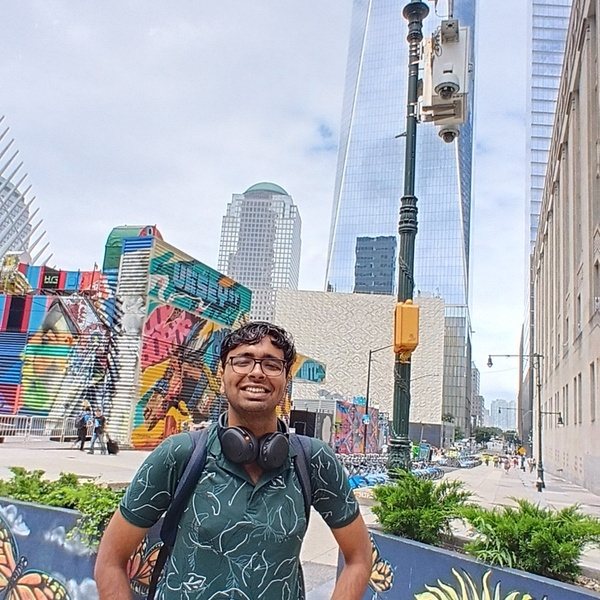
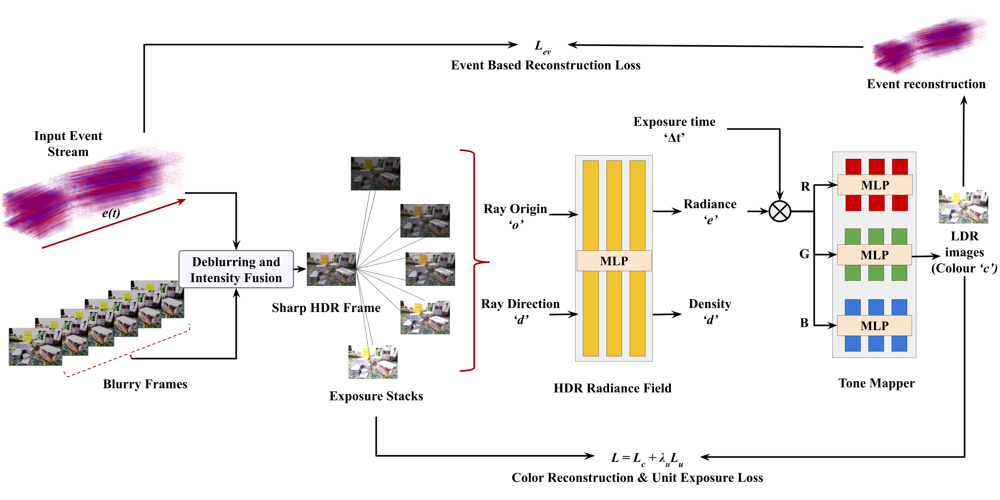
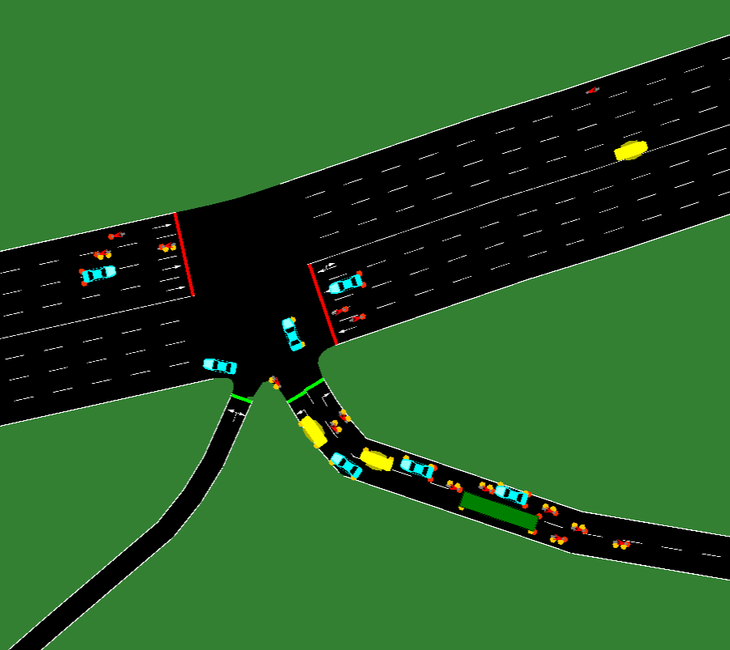
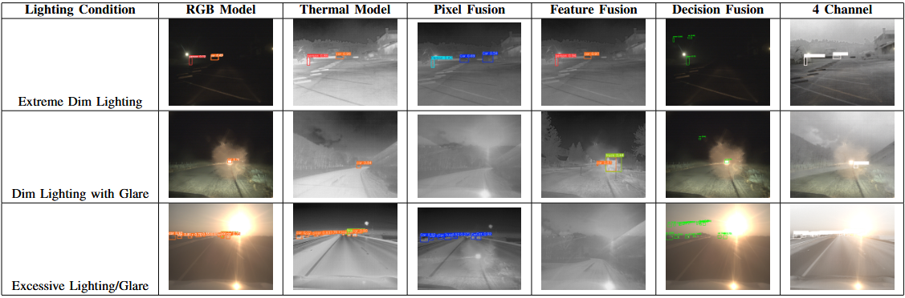
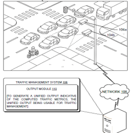
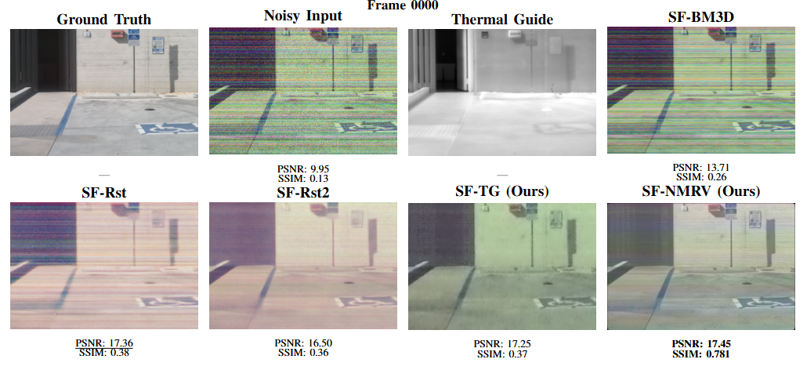
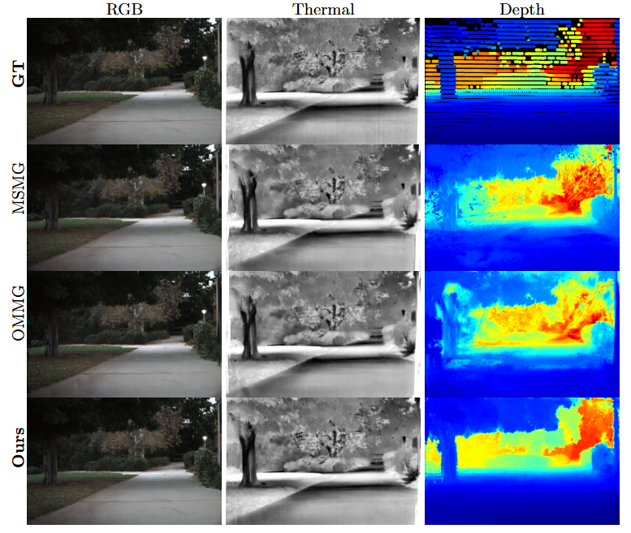
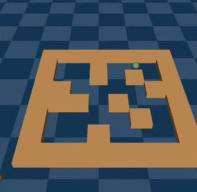
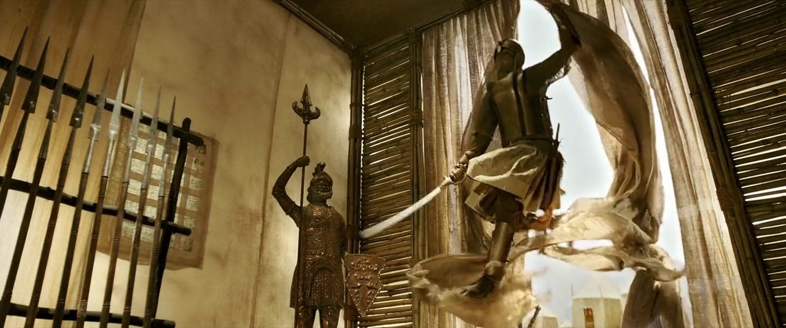
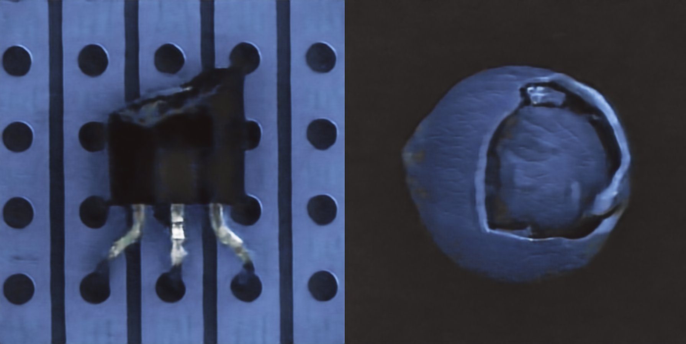

|
Anirud Nandakumar
I'm an incoming Ph.D. student in the Department of Electrical and Computer Engineering (ECE) at the National University of Singapore (NUS), where I will be advised by Prof. Rajat Talak, working on computer vision for robotics.
I am a final year student pursuing B.Tech in Civil Engineering + M.Tech in Data Science (Interdisciplinary dual degree, 5 year programme) at Indian Institute of Technology, Madras (IIT Madras), where I work with Prof. Kaushik Mitra in the Computational Imaging Lab and with Prof. Lelitha Devi Vanajakshi on intelligent transportation systems.
I am currently a Visiting Student Researcher at the University of California, Riverside, working with Prof. Vishwanath Saragadam and Prof. Amit K. Roy-Chowdhury on 3D world simulation for autonomous vehicles using RGB, thermal, and LiDAR data.
My broad research interests lie in computer vision, computational imaging, 3D reconstruction, and reinforcement learning, with applications to robotics and autonomous systems.
Email /
CV /
Scholar /
Github /
ORCID /
LinkedIn
|

|
News
- [2026/06] 🎓 Will be joining NUS ECE as a Ph.D. student, advised by Prof. Rajat Talak.
- [2026/02] 📝 Filed a patent application on intelligent traffic analysis using aerial and ground-based RGB and thermal camera feeds.
- [2025/12] 📄 Blur to Brilliance: Neuromorphic Data Guided Deblurring and HDR Novel View Synthesis published in IEEE Access.
- [2025/09] 📄 Reinforcement Learning Based Traffic Signal Design to Minimize Queue Lengths posted on arXiv.
- [2025/06] 🚗 Started as a Visiting Student Researcher at UC Riverside.
- [2025/02] 📄 Fusion of Thermal and RGB Images for Traffic Object Detection accepted at IEEE APSCON 2025.
- [2024/05] ✈️ Visiting Student Intern at Purdue University, Joint Transportation Research Program.
- [2023/11] 🔬 Research Intern at the Lab for Imaging Sciences and Algorithms, IISc Bangalore.
Research(superscript * indicates equal contribution)
My research lies at the intersection of computer vision, computational imaging, and robotics, with a focus on 3D reconstruction, novel view synthesis, and reinforcement learning for autonomous systems. I'm broadly interested in building systems that can perceive and act robustly in challenging real-world environments — from low-light and thermal imaging to large-scale traffic and driving scenarios.
|
Publications & Patents
|

|
Blur to Brilliance: Neuromorphic Data Guided Deblurring and HDR Novel View Synthesis
Sally Khaidem*,
Anirud Nandakumar*,
Prof. Mansi Sharma,
Prof. Kaushik Mitra
IEEE Access, December 2025.
paper /
bib
*Equal contribution. Introduces a neuromorphic (event camera) data-guided pipeline for deblurring and HDR novel view synthesis.
|
|

|
Reinforcement Learning Based Traffic Signal Design to Minimize Queue Lengths
Anirud Nandakumar,
Prof. Lelitha Devi Vanajakshi,
Dr. Chayan Banerjee
arXiv preprint, September 2025; under review, IEEE Transactions on Intelligent Transportation Systems.
paper /
code /
bib
Introduces a novel RL-based traffic signal control method to minimize queue lengths, integrated with the SUMO traffic simulator.
|
|

|
Fusion of Thermal and RGB Images for Traffic Object Detection
Anirud Nandakumar,
Prof. Lelitha Devi Vanajakshi,
Prof. Chandrashekar Lakshminarayanan
3rd IEEE Applied Sensing Conference (APSCON), 2025.
paper /
bib
A new RGBT YOLOv8 architecture for traffic object detection, comparing pixel-level, feature-level, and decision-level fusion strategies.
|
|

|
Intelligent Traffic Analysis Using Aerial and Ground-Based RGB and Thermal Camera Feeds
Anirud Nandakumar, Ashwanth Sivakumar, Prof. Lelitha Devi Vanajakshi, Prof. Chandrashekar Lakshminarayanan
presentation
Patent application filed, February 2026.
A patent on intelligent traffic analysis combining aerial and ground-based RGB and thermal camera feeds.
|
Ongoing Projects
|

|
Thermal guided RGB low light enhancement and denoising
Anirud Nandakumar*, Calvin Glisson*, Prof. Vishwanath Saragadam,Prof. Ioannis Karamouzas, Prof. Amit K. Roy-Chowdhury, Prof. Kaushik Mitra
In preparation for submission to a top venue.
|
|

|
RGB+Thermal 3D Reconstruction using Gaussian Splatting
Anirud Nandakumar*, Calvin Glisson*, Prof. Vishwanath Saragadam, Prof. Ioannis Karamouzas, Prof. Amit K. Roy-Chowdhury, Prof. Kaushik Mitra
In preparation for submission to a top venue.
|
Research Projects
|

|
Adversarial Offline RL with Reverse Model Imagination
IIT Madras, advised by Prof. Balaraman Ravindran (Course: Recent Advances in Reinforcement Learning) — Aug 2024 - Feb 2025
slides /
report
Introduced an adversarial reverse-imagination-based offline RL framework trained with Soft Actor-Critic, designing reverse dynamics and reverse rollout models to enhance the synthetic dataset for training.
|
|

|
Video Captioning for Movies
IIT Madras, advised by Prof. Pravin Ramachandran Nair (Course: Advanced Topics in Artificial Intelligence) — Jan 2025 - May 2025
pdf /
code
Developed a multi-modal pipeline using frame sampling (optical flow, embeddings) and cascaded LLaVA to generate progressive captions, structured summaries, and detailed narratives directly from video content.
|
|

|
KLA Image Restoration Challenge 2024
IIT Madras, advised by Prof. A.N. Rajagopalan (Course: Deep Learning for Imaging) — Jul 2024 - Nov 2024
pdf /
slides
Placed top 4 at IIT Madras. Performed image restoration from noisy images using a UNet-based generator in a cGAN to preserve defect patterns in electronic chips given a defect mask.
|
Experience
Visiting Student Researcher, University of California, Riverside, CA, US
Guided by Prof. Vishwanath Saragadam and Prof. Amit K. Roy-Chowdhury — June 2025 - Present
- Developing a 3D world simulator using RGB, thermal, and LiDAR data for training autonomous vehicles with reinforcement learning.
- Developing algorithms for SfM, 3D Gaussian Splatting, meshing, and novel view synthesis for thermal imaging.
Visiting Student Intern, Purdue University, IN, US
Guided by Prof. Darcy Bullock, Joint Transportation Research Program — May 2024 - July 2024
- Utilized big data analytics and statistical modeling to estimate hard braking patterns via deceleration thresholds.
- Identified anomalies like work zones and access points to enhance traffic safety using normalized braking rates.
Research Intern, Lab for Imaging Sciences and Algorithms, IISc Bangalore, India
Collaboration with Continental Automotive, guided by Prof. Kunal Narayan Chaudhury — Nov 2023 - Feb 2024
- Developed a selective region-based algorithm to enhance visibility in low-light images of outdoor road conditions.
- Designed brightness-based masking to enhance dark regions while preserving bright ones for autonomous driving.
|
Advisors & Mentors
Prof. Vishwanath Saragadam — UC Riverside; advising my work on 3D world simulation using RGB, thermal, and LiDAR data for autonomous driving.
Prof. Amit K. Roy-Chowdhury — UC Riverside; advising my work on 3D world simulation using RGB, thermal, and LiDAR data for autonomous driving.
Prof. Kaushik Mitra — IIT Madras; advising my work on event-camera-guided deblurring and HDR novel view synthesis and 3D Thermal imaging.
Prof. Kunal Narayan Chaudhury — IISc Bangalore; advised my internship on low-light image enhancement for autonomous driving.
Prof. Lelitha Devi Vanajakshi — IIT Madras; advised my research on RL-based traffic signal control and RGB-thermal fusion for traffic systems.
|
Template adapted from here.
|
|